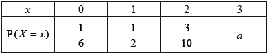

HL Paper 1
\(A\) and \(B\) are independent events such that \({\text{P}}(A) = {\text{P}}(B) = p,{\text{ }}p \ne 0\).
Show that \({\text{P}}(A \cup B) = 2p - {p^2}\).
Find \({\text{P}}(A|A \cup B)\) in simplest form.
The ten numbers \({x_1},{\text{ }}{x_2},{\text{ }} \ldots ,{\text{ }}{x_{10}}\) have a mean of 10 and a standard deviation of 3.
Find the value of \(\sum\limits_{i = 1}^{10} {{{({x_i} - 12)}^2}} \).
The continuous random variable X has a probability density function given by
\(f(x) = \left\{ {\begin{array}{*{20}{l}}
{k\sin \left( {\frac{{\pi x}}{6}} \right),}&{0 \leqslant x \leqslant \,6} \\
{0,}&{{\text{otherwise}}}
\end{array}} \right.\).
Find the value of \(k\).
By considering the graph of f write down the mean of \(X\);
By considering the graph of f write down the median of \(X\);
By considering the graph of f write down the mode of \(X\).
Show that \(P(0 \leqslant X \leqslant 2) = \frac{1}{4}\).
Hence state the interquartile range of \(X\).
Calculate \(P(X \leqslant 4|X \geqslant 3)\).
The discrete random variable X has probability distribution:

(a) Find the value of a.
(b) Find \({\text{E}}(X)\).
(c) Find \({\text{Var}}(X)\).
The discrete random variable X has the following probability distribution, where p is a constant.
![]()
Find the value of p.
Find μ, the expected value of X.
Find P(X > μ).
On Saturday, Alfred and Beatrice play 6 different games against each other. In each game, one of the two wins. The probability that Alfred wins any one of these games is \(\frac{2}{3}\).
Show that the probability that Alfred wins exactly 4 of the games is \(\frac{{80}}{{243}}\).
(i) Explain why the total number of possible outcomes for the results of the 6 games is 64.
(ii) By expanding \({(1 + x)^6}\) and choosing a suitable value for x, prove
\[64 = \left( {\begin{array}{*{20}{c}}
6 \\
0
\end{array}} \right) + \left( {\begin{array}{*{20}{c}}
6 \\
1
\end{array}} \right) + \left( {\begin{array}{*{20}{c}}
6 \\
2
\end{array}} \right) + \left( {\begin{array}{*{20}{c}}
6 \\
3
\end{array}} \right) + \left( {\begin{array}{*{20}{c}}
6 \\
4
\end{array}} \right) + \left( {\begin{array}{*{20}{c}}
6 \\
5
\end{array}} \right) + \left( {\begin{array}{*{20}{c}}
6 \\
6
\end{array}} \right)\]
(iii) State the meaning of this equality in the context of the 6 games played.
The following day Alfred and Beatrice play the 6 games again. Assume that the probability that Alfred wins any one of these games is still \(\frac{2}{3}\).
(i) Find an expression for the probability Alfred wins 4 games on the first day and 2 on the second day. Give your answer in the form \({\left( {\begin{array}{*{20}{c}}
6 \\
r
\end{array}} \right)^2}{\left( {\frac{2}{3}} \right)^s}{\left( {\frac{1}{3}} \right)^t}\) where the values of r, s and t are to be found.
(ii) Using your answer to (c) (i) and 6 similar expressions write down the probability that Alfred wins a total of 6 games over the two days as the sum of 7 probabilities.
(iii) Hence prove that \(\left( {\begin{array}{*{20}{c}}
{12} \\
6
\end{array}} \right) = {\left( {\begin{array}{*{20}{c}}
6 \\
0
\end{array}} \right)^2} + {\left( {\begin{array}{*{20}{c}}
6 \\
1
\end{array}} \right)^2} + {\left( {\begin{array}{*{20}{c}}
6 \\
2
\end{array}} \right)^2} + {\left( {\begin{array}{*{20}{c}}
6 \\
3
\end{array}} \right)^2} + {\left( {\begin{array}{*{20}{c}}
6 \\
4
\end{array}} \right)^2} + {\left( {\begin{array}{*{20}{c}}
6 \\
5
\end{array}} \right)^2} + {\left( {\begin{array}{*{20}{c}}
6 \\
6
\end{array}} \right)^2}\).
Alfred and Beatrice play n games. Let A denote the number of games Alfred wins. The expected value of A can be written as \({\text{E}}(A) = \sum\limits_{r = 0}^n {r\left( {\begin{array}{*{20}{c}}
n \\
r
\end{array}} \right)} \frac{{{a^r}}}{{{b^n}}}\).
(i) Find the values of a and b.
(ii) By differentiating the expansion of \({(1 + x)^n}\), prove that the expected number of games Alfred wins is \(\frac{{2n}}{3}\).
Consider the following functions:
\[f(x) = \frac{{2{x^2} + 3}}{{75}},{\text{ }}x \geqslant 0\]
\[g(x) = \frac{{\left| {3x - 4} \right|}}{{10}},{\text{ }}x \in \mathbb{R}{\text{ }}.\]
State the range of f and of g .
Find an expression for the composite function \(f \circ g(x)\) in the form \(\frac{{a{x^2} + bx + c}}{{3750}}\), where \(a,{\text{ }}b{\text{ and }}c \in \mathbb{Z}\) .
(i) Find an expression for the inverse function \({f^{ - 1}}(x)\) .
(ii) State the domain and range of \({f^{ - 1}}\) .
The domains of f and g are now restricted to {0, 1, 2, 3, 4} .
By considering the values of f and g on this new domain, determine which of f and g could be used to find a probability distribution for a discrete random variable X , stating your reasons clearly.
Using this probability distribution, calculate the mean of X .
In a population of rabbits, \(1\%\) are known to have a particular disease. A test is developed for the disease that gives a positive result for a rabbit that does have the disease in \(99\%\) of cases. It is also known that the test gives a positive result for a rabbit that does not have the disease in \(0.1\%\) of cases. A rabbit is chosen at random from the population.
Find the probability that the rabbit tests positive for the disease.
Given that the rabbit tests positive for the disease, show that the probability that the rabbit does not have the disease is less than 10 %.
Let A and B be events such that \({\text{P}}(A) = 0.6,{\text{ P}}(A \cup B) = 0.8{\text{ and P}}(A|B) = 0.6\) .
Find P(B) .
A bag contains three balls numbered 1, 2 and 3 respectively. Bill selects one of these balls at random and he notes the number on the selected ball. He then tosses that number of fair coins.
Calculate the probability that no head is obtained.
Given that no head is obtained, find the probability that he tossed two coins.
Events \(A\) and \(B\) are such that \({\text{P}}(A) = 0.2\) and \({\text{P}}(B) = 0.5\).
Determine the value of \({\text{P}}(A \cup B)\) when
(i) \(A\) and \(B\) are mutually exclusive;
(ii) \(A\) and \(B\) are independent.
Determine the range of possible values of \({\text{P}}\left( {A|B} \right)\).
Two events \(A\) and \(B\) are such that \({\text{P}}(A \cap B') = 0.2\) and \({\text{P}}(A \cup B) = 0.9\).
On the Venn diagram shade the region \(A' \cap B'\).

Find \({\text{P}}(A'|B')\).
\(A\) and \(B\) are two events such that \({\text{P}}(A) = 0.25,{\text{ P}}(B) = 0.6\) and \({\text{P}}(A \cup B) = 0.7\).
Find \({\text{P}}(A \cap B)\).
Determine whether events \(A\) and \(B\) are independent.
Two unbiased tetrahedral (four-sided) dice with faces labelled 1, 2, 3, 4 are thrown and the scores recorded. Let the random variable T be the maximum of these two scores.
The probability distribution of T is given in the following table.
![]()
Find the value of a and the value of b.
Find the expected value of T.
A biased coin is weighted such that the probability of obtaining a head is \(\frac{4}{7}\). The coin is tossed 6 times and X denotes the number of heads observed. Find the value of the ratio \(\frac{{{\text{P}}(X = 3)}}{{{\text{P}}(X = 2)}}\).
In a particular city 20 % of the inhabitants have been immunized against a certain disease. The probability of infection from the disease among those immunized is \(\frac{1}{{10}}\), and among those not immunized the probability is \(\frac{3}{4}\). If a person is chosen at random and found to be infected, find the probability that this person has been immunized.
A mathematics test is given to a class of 20 students. One student scores 0, but all the other students score 10.
Find the mean score for the class.
Write down the median score.
Write down the number of students who scored
(i) above the mean score;
(ii) below the median score.
At a nursing college, 80 % of incoming students are female. College records show that 70 % of the incoming females graduate and 90 % of the incoming males graduate. A student who graduates is selected at random. Find the probability that the student is male, giving your answer as a fraction in its lowest terms.
The probability distribution of a discrete random variable X is defined by
\({\text{P}}(X = x) = cx(5 - x),{\text{ }}x = {\text{1, 2, 3, 4}}\) .
(a) Find the value of c.
(b) Find E(X) .
A continuous random variable X has the probability density function
\[f(x) = \left\{ {\begin{array}{*{20}{c}}
{k\sin x,}&{0 \leqslant x \leqslant \frac{\pi }{2}} \\
{0,}&{{\text{otherwise}}{\text{.}}}
\end{array}} \right.\]
Find the value of k.
Find \({\text{E}}(X)\).
Find the median of X.
Mobile phone batteries are produced by two machines. Machine A produces 60% of the daily output and machine B produces 40%. It is found by testing that on average 2% of batteries produced by machine A are faulty and 1% of batteries produced by machine B are faulty.
(i) Draw a tree diagram clearly showing the respective probabilities.
(ii) A battery is selected at random. Find the probability that it is faulty.
(iii) A battery is selected at random and found to be faulty. Find the probability that it was produced by machine A.
In a pack of seven transistors, three are found to be defective. Three transistors are selected from the pack at random without replacement. The discrete random variable X represents the number of defective transistors selected.
(i) Find \({\text{P}}(X = 2)\).
(ii) Copy and complete the following table:

(iii) Determine \({\text{E}}(X)\).
The faces of a fair six-sided die are numbered 1, 2, 2, 4, 4, 6. Let \(X\) be the discrete random variable that models the score obtained when this die is rolled.
Complete the probability distribution table for \(X\).

Find the expected value of \(X\).
The continuous random variable X has probability density function given by
\[f(x) = \left\{ {\begin{array}{*{20}{c}}
{a{e^{ - x}},}&{0 \leqslant x \leqslant 1} \\
{0,}&{{\text{otherwise}}{\text{.}}}
\end{array}} \right.\]
State the mode of X .
Determine the value of a .
Find E(X ) .
Events \(A\) and \(B\) are such that \({\text{P}}(A) = 0.3\) and \({\text{P}}(B) = 0.4\) .
Find the value of \({\text{P}}(A \cup B)\) when
(i) \(A\) and \(B\) are mutually exclusive;
(ii) \(A\) and \(B\) are independent.
Given that \({\text{P}}(A \cup B) = 0.6\) , find \({\text{P}}(A|B)\) .
A random variable has a probability density function given by
\[f(x) = \left\{ {\begin{array}{*{20}{c}}
{kx(2 - x),}&{0 \leqslant x \leqslant 2} \\
{0,}&{{\text{elsewhere}}{\text{.}}}
\end{array}} \right.\]
(a) Show that \(k = \frac{3}{4}\) .
(b) Find \({\text{E}}(X)\) .
A box contains four red balls and two white balls. Darren and Marty play a game by each taking it in turn to take a ball from the box, without replacement. The first player to take a white ball is the winner.
Darren plays first, find the probability that he wins.
The game is now changed so that the ball chosen is replaced after each turn.
Darren still plays first.
Show that the probability of Darren winning has not changed.
Chloe and Selena play a game where each have four cards showing capital letters A, B, C and D.
Chloe lays her cards face up on the table in order A, B, C, D as shown in the following diagram.

Selena shuffles her cards and lays them face down on the table. She then turns them over one by one to see if her card matches with Chloe’s card directly above.
Chloe wins if no matches occur; otherwise Selena wins.
Chloe and Selena repeat their game so that they play a total of 50 times.
Suppose the discrete random variable X represents the number of times Chloe wins.
Show that the probability that Chloe wins the game is \(\frac{3}{8}\).
Determine the mean of X.
Determine the variance of X.
A biased coin is tossed five times. The probability of obtaining a head in any one throw is \(p\).
Let \(X\) be the number of heads obtained.
Find, in terms of \(p\), an expression for \({\text{P}}(X = 4)\).
(i) Determine the value of \(p\) for which \({\text{P}}(X = 4)\) is a maximum.
(ii) For this value of \(p\), determine the expected number of heads.
A batch of 15 DVD players contains 4 that are defective. The DVD players are selected at random, one by one, and examined. The ones that are checked are not replaced.
What is the probability that there are exactly 3 defective DVD players in the first 8 DVD players examined?
What is the probability that the \({9^{{\text{th}}}}\) DVD player examined is the \({4^{{\text{th}}}}\) defective one found?
At a skiing competition the mean time of the first three skiers is 34.1 seconds. The time for the fourth skier is then recorded and the mean time of the first four skiers is 35.0 seconds. Find the time achieved by the fourth skier.
Four numbers are such that their mean is 13, their median is 14 and their mode is 15. Find the four numbers.
A continuous random variable X has the probability density function f given by
\[f(x) = \left\{ {\begin{array}{*{20}{c}}
{c(x - {x^2}),}&{0 \leqslant x \leqslant 1} \\
{0,}&{{\text{otherwise}}{\text{.}}}
\end{array}} \right.\]
(a) Determine c.
(b) Find \({\text{E}}(X)\).
The probability density function of the random variable X is defined as
\[f(x) = \left\{ {\begin{array}{*{20}{c}}
{\sin x,}&{0 \leqslant x \leqslant \frac{\pi }{2}} \\
{0,}&{{\text{otherwise}}{\text{.}}}
\end{array}} \right.\]
Find \({\text{E}}(X)\).
Two players, A and B, alternately throw a fair six-sided dice, with A starting, until one of them obtains a six. Find the probability that A obtains the first six.
Two events A and B are such that \({\text{P}}(A \cup B) = 0.7\) and \({\text{P}}(A|B') = 0.6\).
Find \({\text{P}}(B)\).
Consider two events \(A\) and \(A\) defined in the same sample space.
Given that \({\text{P}}(A \cup B) = \frac{4}{9},{\text{ P}}(B|A) = \frac{1}{3}\) and \({\text{P}}(B|A') = \frac{1}{6}\),
Show that \({\text{P}}(A \cup B) = {\text{P}}(A) + {\text{P}}(A' \cap B)\).
(i) show that \({\text{P}}(A) = \frac{1}{3}\);
(ii) hence find \({\text{P}}(B)\).
A continuous random variable X has probability density function
\[f(x) = \left\{ {\begin{array}{*{20}{c}}
{0,}&{x < 0} \\
{a{{\text{e}}^{ - ax}},}&{x \geqslant 0.}
\end{array}} \right.\]
It is known that \({\text{P}}(X < 1) = 1 - \frac{1}{{\sqrt 2 }}\).
(a) Show that \(a = \frac{1}{2}\ln 2\).
(b) Find the median of X.
(c) Calculate the probability that X < 3 given that X >1.
The random variable \(X\) has the Poisson distribution \({\text{Po}}(m)\). Given that \({\text{P}}(X > 0) = \frac{3}{4}\), find the value of \(m\) in the form \(\ln a\) where \(a\) is an integer.
The random variable \(Y\) has the Poisson distribution \({\text{Po}}(2m)\). Find \({\text{P}}(Y > 1)\) in the form \(\frac{{b - \ln c}}{c}\) where \(b\) and \(c\) are integers.
Events \(A\) and \(B\) are such that \({\text{P}}(A) = \frac{2}{5},{\text{ P}}(B) = \frac{{11}}{{20}}\) and \({\text{P}}(A|B) = \frac{2}{{11}}\).
(a) Find \({\text{P}}(A \cap B)\).
(b) Find \({\text{P}}(A \cup B)\).
(c) State with a reason whether or not events \(A\) and \(B\) are independent.
The random variable T has the probability density function
\[f(t) = \frac{\pi }{4}\cos \left( {\frac{{\pi t}}{2}} \right),{\text{ }} - 1 \leqslant t \leqslant 1.\]
Find
(a) P(T = 0) ;
(b) the interquartile range.
The continuous variable X has probability density function
\[f(x) = \left\{ {\begin{array}{*{20}{c}}
{12{x^2}(1 - x),}&{0 \leqslant x \leqslant 1} \\
{0,}&{{\text{otherwise}}{\text{.}}}
\end{array}} \right.\]
Determine \({\text{E}}(X)\) .
Determine the mode of X .
Find the coordinates of the point of intersection of the planes defined by the equations \(x + y + z = 3,{\text{ }}x - y + z = 5\) and \(x + y + 2z = 6\).
John removes the labels from three cans of tomato soup and two cans of chicken soup in order to enter a competition, and puts the cans away. He then discovers that the cans are identical, so that he cannot distinguish between cans of tomato soup and chicken soup. Some weeks later he decides to have a can of chicken soup for lunch. He opens the cans at random until he opens a can of chicken soup. Let Y denote the number of cans he opens.
Find
(a) the possible values of Y ,
(b) the probability of each of these values of Y ,
(c) the expected value of Y .
A football team, Melchester Rovers are playing a tournament of five matches.
The probabilities that they win, draw or lose a match are \(\frac{1}{2}\), \(\frac{1}{6}\) and \(\frac{1}{3}\) respectively.
These probabilities remain constant; the result of a match is independent of the results of other matches. At the end of the tournament their coach Roy loses his job if they lose three consecutive matches, otherwise he does not lose his job. Find the probability that Roy loses his job.
The random variable X has probability density function f where
\[f(x) = \left\{ {\begin{array}{*{20}{c}}
{kx(x + 1)(2 - x),}&{0 \leqslant x \leqslant 2} \\
{0,}&{{\text{otherwise }}{\text{.}}}
\end{array}} \right.\]
Sketch the graph of the function. You are not required to find the coordinates of the maximum.
Find the value of k .
Tim and Caz buy a box of 16 chocolates of which 10 are milk and 6 are dark. Caz randomly takes a chocolate and eats it. Then Tim randomly takes a chocolate and eats it.
Draw a tree diagram representing the possible outcomes, clearly labelling each branch with the correct probability.
Find the probability that Tim and Caz eat the same type of chocolate.
Jenny goes to school by bus every day. When it is not raining, the probability that the bus is late is \(\frac{3}{{20}}\). When it is raining, the probability that the bus is late is \(\frac{7}{{20}}\). The probability that it rains on a particular day is \(\frac{9}{{20}}\). On one particular day the bus is late. Find the probability that it is not raining on that day.
On a particular day, the probability that it rains is \(\frac{2}{5}\) . The probability that the “Tigers” soccer team wins on a day when it rains is \(\frac{2}{7}\) and the probability that they win on a day when it does not rain is \(\frac{4}{7}\).
Draw a tree diagram to represent these events and their outcomes.
What is the probability that the “Tigers” soccer team wins?
Given that the “Tigers” soccer team won, what is the probability that it rained on that day?
A continuous random variable \(T\) has probability density function \(f\) defined by
\[f(t) = \left\{ {\begin{array}{*{20}{c}} {\left| {2 - t} \right|,}&{1 \le t \le 3} \\ {0,}&{{\text{otherwise.}}} \end{array}} \right.\]
Sketch the graph of \(y = f(t)\).
Find the interquartile range of \(T\).